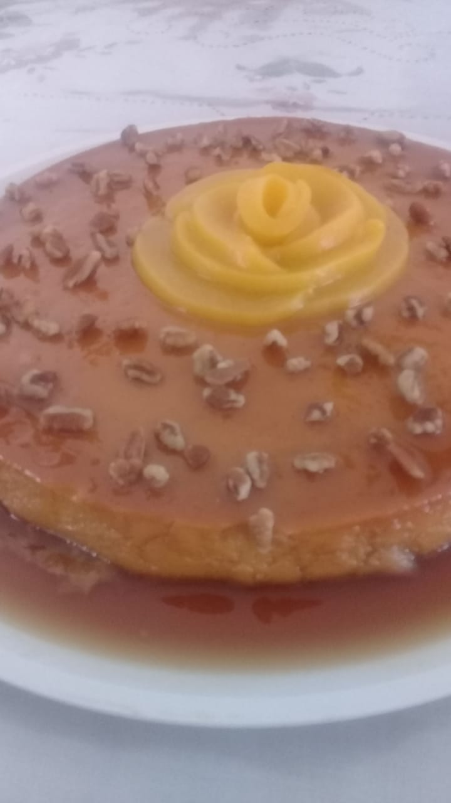

Choco Flan

Description of the recipe
a paragraph of the recipe
Ingredientes
- 1/4 taza de azucar
- 3 cucharada de agua
- 1 lata de leche condensada
- 1 cda da vanilla
- jugo de limon
- 6 huevos
- 3/4 de taza de cocoa
- 1 1/4 taza de azucar
- 1/2 taza de leche
- 1/2 taza de aceite
- 1 cda de plovo para hornear
- pizca de sal
Pasos
- caramelo: en una sarten derretir el azucar con el agua
hasta convertirse en caramelo y vaciar al modle que
se usara previamente engrasado
- flan: licur todos los ingredientes y reservar
- pastel: tamizar todos lo secos
- Batir huevo, aceite y azucar, mezciar los secos y
leche e integrar todo
- Vaciar el molde con caramelo
- Tapar con aluminio y hornear a bano maria o sobre la
estufa a bano maria